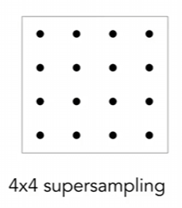

GAMES101课程笔记（二）——Rasterization
引言
书接上文，经过了MVP矩阵的变换后，我们已经将三维世界的物体变换到了$[-1,1]^3$的标准立方体中，那接下来我们该如何将它绘制到我们的屏幕上呢？本文的主题光栅化（Rasterization）就是解决这一问题的钥匙。
光栅化的背后是一系列复杂的数学和计算过程，它们将三维世界转化为我们计算机屏幕上的二维图像。这个过程包括了顶点转换、三角形裁剪、光栅化和像素渲染等关键步骤，每一个步骤都需要高效地执行，以实现流畅的图形渲染和动画展示。
前文指路：
GAMES101课程笔记（一）——Transformation
Pixel——像素
为了解计算机如何显示图像，我们要先从屏幕开始说起，更具体一点，是从像素开始说起。
在屏幕上，像素是组成图像的最基本单位，每个像素有红绿蓝三个颜色组成，它们像点阵一样分布在屏幕上。
借由三原色的特性，每一个像素都可以展现出任何颜色，从而能够显示出任意图像。
根据像素的排布特点，我们能联想到使用数组来对当前显示图像进行表达，数组中的每个元素包含有红（R）绿（G）蓝（B）三个颜色。
我们使用坐标来标记屏幕上的每一个像素，这就是屏幕空间，例如下图中的蓝色像素坐标为$(2,1)$。
但实际中，像素并不是真正的一个点，它是有大小的，而我们在使用刚才像素坐标时，实际上描述的是该像素左下角点的位置。
该像素的中心坐标实际上是$(2.5,1.5)$，占据的空间是$(2,1)$到$(3,2)$的这部分区域。
本文的主题光栅化（Rasterization），就是要讲如何用像素来进行图像的绘制。
Rasterization——光栅化
了解了屏幕的构成，我们接下来思考，如何将$[-1,1]^3$中的点转换到$[0,width]×[0,height]$的平面坐标上。
这里我们先不考虑空间中的$z$坐标，只考虑变换$x$与$y$坐标，那其实就是一个平移加缩放的变换，变换矩阵为：
需要注意的是，我们的变换只是将点转换到平面坐标上，而没有将其转换到具体的像素点上。
（理由正如刚才提到的，像素并不是真正的点，它是有大小的）
接下来我们就要探讨，如何进行这一步的转换。
神奇的三角形
在图形学中，我们经常使用三角形来组成更复杂的多边形，例如下图中的圆球和海豚。
这是因为三角形有很多优秀的性质，例如：
- 本身是最基础的多边形，能构成其它任何多边形
- 三角形一定是一个平面图形（三点确定一个平面）
- 容易判断点在三角形内外
- 在三角形内容易进行插值运算（后续会详细提及）
所以说，只要我们解决了如何绘制一个三角形的问题，就能解决绘制任何图形的问题。
举一个具体的例子，现在有一个红色三角形，知道它的三个顶点坐标，我们该如何使用像素将其绘制出来呢？
Sampling——采样
采样，就是将连续值转化为离散值的过程。在我们的问题中，像素就是离散值，因此可以用采样的方法来解决。
（想深入了解的话可以简单学习一下信号与系统）
具体而言，是使用像素的中心坐标来对屏幕上的图形进行采样。最简单的做法就是判断像素中心是否在三角形内，如果在那就显示，否则就不显示，如下图所示：
对于平面上的所有点，应满足函数：
我们使用离散的像素来对该函数进行采样，制这个三角形的代码就可以写为：
for (int x=0; x<xmax; ++x)
for (int y=0; x<ymax; ++y)
image[x][y]=inside(t, x+0.5, y+0.5)思路就是偏离所有的像素，逐个判断是否在三角形内。
现在问题就落在：该如何判断这个点是否在三角形内部呢？
一个简单的方法是使用叉积来进行判断，假设我们像上图已知三角形$P_0P_1P_2$（顶点已按逆时针排序）和一点$Q$。
我们可以分别计算$\vec{P_0P_1}×\vec{P_0Q}$，$\vec{P_1P_2}×\vec{P_1Q}$，$\vec{P_2P_0}×\vec{P_2Q}$的结果，假如三者的结果都指向屏幕外，那就可以判断Q点在三角形内，反之则在三角形外。
在本例中，由于$\vec{P_2P_0}×\vec{P_2Q}$的结果向量指向屏幕内，所以可以得到$Q$在三角形外的结论。
当然，除了在三角形外和在三角形内，还有可能点刚好在三角形边上，就像下图中的点，我们究竟该说是在三角形1上，还是在三角形2上，或者说干脆不在任何一个上？
答案是都可以，虽然在OpenGL等库中对此很严格的规定，但在我们学习的过程中并不重要，只要我们使用一套自洽的规则来进行判断，或者干脆不特殊处理就行。
比如我们就可以规定：在边上就在三角形内。那么这个点就既在三角形1内，也在三角形2内。
总而言之，不必过于纠结这种情况。
Bounding Box——包围盒
在刚才的代码中，我们遍历了屏幕上所有的像素，但事实上，很多三角形只占据了屏幕中的一小部分，遍历所有像素无疑会造成额外的开销。
所以我们就可以只判断三角形所占据的那一块区域中的像素，这样就可以提高效率，这种将目标图形包含在内的图形，我们就称之为包围盒。
下图中的蓝色像素就是一个典型的包围盒，我们做采样时只需要对这些像素进行处理就可以了。
需要注意的是包围盒并不一定要是矩形的，只是这里举的例子是这样的，矩形也比较便于处理。
这种边平行于坐标轴的包围盒非常常用，被简称为AABB（Axis-Aligned Bounding Box，轴对齐）包围盒。
包围盒的获得非常容易，假设三角形的顶点坐标为$P_0(x_0,y_0)$，$P_1(x_1,y_1)$，$P_2(x_2,y_2)$，那么其包围盒就是以点$(min\begin{Bmatrix}x_0,x_1,x_2\end{Bmatrix},min\begin{Bmatrix}y_0,y_1,y_2\end{Bmatrix})$为左下角，点$(max\begin{Bmatrix}x_0,x_1,x_2\end{Bmatrix},\begin{Bmatrix}y_0,y_1,y_2\end{Bmatrix})$为右上角的矩形。
Antialiasing——反走样
Artifacts——瑕疵
很多时候，屏幕最终呈现出的画面会出现一些错误，例如锯齿、噪点等问题的出现，这些错误在图形学上我们都可以统称为Artifacts。
（闫老师不是很喜欢说瑕疵，而是直接说英文Artifacts，我个人也觉得直接说英文比较顺口，其实这个单词在图形学里还挺常见的，已经是一个梗的程度了）
这里我们介绍一些因采样引起的问题（Sampling Artifacts）。
Jaggies——锯齿
像素毕竟是离散的，因此在绘制图像时难免会出现差异，其中最普遍的一个问题就是锯齿。
我们期望中的三角形应该像左图一样——拥有三条平滑的边，完美地符合数学上的定义，但在屏幕上可做不到。
真实的屏幕上的三角形像右图一样，其边缘为不规则的锯齿，如何解决锯齿也是图形学的一个经典课题。
该问题的根源原因在于采样频率不够高，即像素点不够多，理论上当有无限个像素点时就能形成完美的直线。
（我们平时说的高分辨率其实就是提高了采样频率，也就感觉锯齿减少了）
Moire pattern——摩尔纹
摩尔纹是另外一个经典问题，有时我们拍摄条纹密集的物体，最终的成像却会变成奇怪的波纹条纹，就像下图展示的一样：
这同样是因为采样频率低而产生的问题，当重复图案的周期频率超过采样频率时，图案就会出现一部分的缺失，当我们再现时便会出现这种问题。
闫老师给出了一个复现摩尔纹的办法，即将左图的奇数行奇数列删除，将其余部分重新拼合（也就是图片缩小为原来的1/4），再将其按原来的大小显示，就会变成右图这样的情况。
这个过程相当于将横向和纵向的采样频率各下降一半，此时其频率低于原始图案的重复频率，便出现了摩尔纹。
Wagon wheel effect——车轮效应
在下图中，我们顺时针旋转一个轮盘，但奇怪的是，轮盘上的一些部分看上去像是在逆时针旋转。

这种现象被称为车轮效应，与上述两者不同，这是时间维度上的采样频率不够而导致的。
了解频率
到这里我们已经提到了很多次频率这个词了，现在我们需要深入介绍一下。
采样频率的影响
这里分析一般情况下，采样频率低为什么会造成走样。
以下图为例，假设我们要对蓝色的正弦波进行采样，但采样频率偏低，采样到的几个点已经标注在了图上：
但如果我们再引入一个函数，即图中的黑色正弦波，用相同的频率进行采样，那我们的采样结果将和之前的一致。
也就是说，用相同的办法对两个频率差距很大的函数进行采样，居然得到了一样的结果，这便是走样出现的原因。
Fourier Transform——傅里叶变换
在微积分当中我们应该学过傅里叶级数，即任何周期函数都可以用正弦函数和余弦函数构成的无穷级数来表示。
其一般表达式为：
通常我们都是在有限范围内处理函数，所以我们可以近似地认为可以用傅里叶级数来表达任何函数。
而我们观察傅里叶级数可以知道，它实际上是无数个不同频率的正弦波和余弦波组成的，那么我们就可以将这个函数拆分为不同的频率段，为实现这一过程，我们使用的变换为傅里叶变换。
傅里叶变换的公式为：
其逆变换为：
这样我们就可以把一个函数在其原始域（通常是时域）和频域之间进行相互转换了。
下图展示了对图片应用傅里叶变换后的结果：
右图的中心区域代表低频信号，越靠外表示的信号频率越高，不难看出这张图片的大多数信息都集中在低频区。
（事实上很多图片的信息都是集中在低频区）
另外在频率图中还有两条相互垂直的白线，这是因为我们在应用傅里叶变换时，都希望原函数是周期函数，于是我们会将原图复制很多份，像铺地板一样铺在一起，这样会导致在每张图的边界处产生信号的跳变，从而形成这两条白线。
我们主要关注图片本身的信息，因此可以忽略这两条白线。
所以说，傅里叶变换让我们能从频率上“看”到这张图。
Filtering——滤波
滤波是信号处理领域中的一项重要任务，它指的是通过应用一种称为滤波器的函数或操作，对输入信号进行变换或修改，这里先介绍一些简单的滤波方式。
首先是高通滤波，我们会将低频信号全部过滤掉，它就会产生这样的效果：
可以看出，图片中剩下的信息基本上都是”边界“，这并不难理解，因为边界两边往往会发生剧烈的变化，所以会包含很更多的高频信号。
相反地，还有低通滤波，即过滤掉高频信号，它的效果是这样的：
图中只剩下了模糊的色块，原因与高通滤波是一致的，只是这里我们删除了边界。
或者我们也可以只取中间的一部分信号：
事实上，滤波的内容并不仅仅只是简单的删除一部分信号，针对不同的问题，我们会对原始信号进行不同的滤波方式（例如下文就要介绍的卷积）。
我们可以看出，从频域的角度来分析图片，无疑是一个全新且实用的角度。
Convolution——卷积
卷积是图像处理中非常常见的一种操作，为了进行卷积，我们首先需要定义一个卷积核。
在下图中，我们定义的卷积核就是$[1/4,1/2,1/4]$，Signal是我们的原始信号。
进行卷积操作，就是将卷积核与原始信号对齐，然后类似向量点积一样进行成绩求和得到结果：
计算完后将卷积核向右移动，对齐下一个信号，再次进行计算：
直到所有的信号都计算完毕，卷积操作也就结束了。
如果Signal是我们的原始图片，那么从Signal到Result的过程就是一个滤波，Filter被称为滤波器。
卷积操作拥有两个对偶的特性：
- 在空间域上进行卷积操作，相当于在频域上进行乘积操作。
- 在空间域上进行乘积操作，相当于在频域上进行卷积操作。
该定理在这里我们不予证明，借由这个性质，我们进行卷积滤波时就可以有两种做法。
做法一：
- 直接在空间域上计算卷积
做法二：
- 将图片和卷积核从空间域转换为频域（使用傅里叶变换）
- 在频域上进行乘法运算
- 将频域转换为空间域（使用逆傅里叶变换）
下图展示了上述两种做法的过程：
图中的这种滤波器被叫做方框滤波器（Box Filter），它是一个$n×n$的矩阵，其所有元素都是$\frac{1}{n×n}$。
其本质是计算了区域内所有像素的平均值，它在空间域与频域上的情况如下所示：
如果我们加大方框滤波器的尺寸，那它对应的频率信号会变低：
反映在实际效果上，就是我们使用的方框滤波器越大，那么结果图就会越模糊。
从频域的角度理解采样
现在我们可以从频域的角度来理解采样了。
回想我们之前提到的采样，实际上是使用了一个冲激函数与原函数相乘。下图中，图（a）是原函数，图（c）是冲激函数，进行采样得到的就是图（e）中的函数。
刚才我们说过，在空间域上进行乘积操作，相当于在频域上进行卷积操作。因此从频域的角度来看，我们是做了一个函数卷积，如图（b）（d）（f）所示。
图（d）仍然是冲激函数，因为冲激函数在频域上依然是冲激函数，但周期不同。
所以采样的本质，是在重复原始信号的频谱。采样的频率，影响了频谱中重复信号的距离。
也就是说，如果我们的采样频率过低，会导致重复信号产生重叠，从而导致走样的出现。
通过提高采样频率，能够从根本上解决走样的问题，但缺点是需要更大的开销，以及更多的像素。
Blurring（Pre-Filtering）——模糊
解决采样的Artifacts，除了提高采样频率，我们还可以在采样前对原始图案进行模糊处理，如下图：
这么做能让边界处的像素使用中间颜色值，从而降低视觉上的锯齿感，下面是应用模糊前后的对比图：

从频域的角度上说，将图像模糊之后，高频信号被滤除，于是采样后的信号便不会再重叠。
这也解释了为什么模糊操作一定要在采样前进行，而不能颠倒两者的顺序。
具体的做法就是对图片进行一个卷积操作，然后采样即可。
Supersampling——超级采样
对于像素点的着色，我们可以更加直观地来看，下图展示了几种状态的像素着色，它们的区别在于本身有多少比例在三角形外和三角形内。
可以发现，在三角形内的部分比例越高，像素着色越白，反之则越黑。
但其实这个覆盖比例是很难计算的，所以在实际应用中，我们使用另一种方法来近似。
我们假设每一个像素是可以再分的，例如我们将一个像素看作16个更小的像素：

分别判断16个点是否在三角形内，然后根据结果来近似得出三角形的覆盖率。
举一个具体的例子，我们用原始采样法来绘制三角形可能是这样的：
使用超级采样的话，我们先将每个像素看作4个小像素，那么经过采样判断，结果应是：
但我们知道，实际上每个像素只能着一色，所以对于每个实际像素，我们计算在三角形内的小像素比例。

例如上方这个角处的像素，它有三个小像素在三角形内，所以该像素的取值就应是0.75，按此方式计算完所有像素，就完成了该三角形的绘制，并达到抗锯齿的效果。
遮挡难题
现在我们掌握了绘制平面图形的技术，但我们最初的问题可是绘制三维物体，三维物体转换到平面上时会出现遮挡问题，也就是物体互相覆盖的情形，为了保证正确成像，我们需要认真考虑这一问题。
Painter’s Algorithm——画家算法
一个最简单的想法就是由远及近地进行绘制，这样近的物体就会覆盖远的物体，从而自然地处理遮挡问题，以画一个立方体为例：

我们先绘制其后面，然后绘制左、右、下面，最后绘制上、前面，这样就可以准确表达立方体各个面间的遮挡关系，这一算法就是画家算法。
从程序的角度思考，我们需要对每个三角的深度来进行排序，假设有$n$个三角形，时间复杂度为$O(n\log(n))$。
但画家算法的适用场景仅限于简单遮挡，如果面临上图中这种情况，那不管我们怎么调整每个三角的绘制顺序，都无法正确表达。
Z-Buffer——深度缓存
首先提醒，本文假设相机放在原点，向$z$轴正方向看去，所以默认$z$值为正。
图形学中我们更常用的一种算法是深度缓存，相比于画家算法，它适用于更多的场景。
深度缓存的基本思想就是为每个像素记录最小的z值（也就是最小的深度值、最浅的距离），然后以此为依据来进行绘制。
为了实现这一过程，我们使用DepthBuffer和FrameBuffer来存储信息，其中DepthBuffer用以保存深度信息，Framebuffer用以保存色彩信息。
这里的DepthBuffer其实就是我们平时所说的深度图，它与我们的绘制结果是同时生成的，我们可以用灰度的形式绘制出来：
我们用伪代码来解释Z-Buffer的过程：
for (each triangle T) // go through each triangle
for (each sample (x, y, z) in T)
if (z<zbuffer[x,y]) // closest sample so far
framebuffer[x,y] = rgb; // update color
zbuffer[x,y] = z; // update depth
else
... // do nothing简单而言就是遍历所有的三角，然后依据$z$值更新对应的DepthBuffer（代码中的zbuffer）和FrameBuffer。
下图是一个更加直观的示例，其中R代表无限大：
在第一步中，由于红色三角形的深度（5）小于初始值（无限大），所以红色三角形对应的像素被全部更新为5。
而在第二步中，重点关注蓝色三角形中，和红色三角形重合的地方，某些深度小于5，某些则大于5，对那些小于5的深度进行更新，从而获得了正确的深度缓存。
假设有$n$个三角形，每个三角形覆盖的像素都是一个可估计的常数值，则时间复杂度为$O(n)$。
之所以节省了这么多，是因为Z-Buffer解决问题的方式是最小值，而非排序。
不难发现，在Z-Buffer算法中，遍历三角的顺序并不重要，无论顺序如何，最终的结果都是一致的。
OK，第二篇光栅化笔记，就此完结！